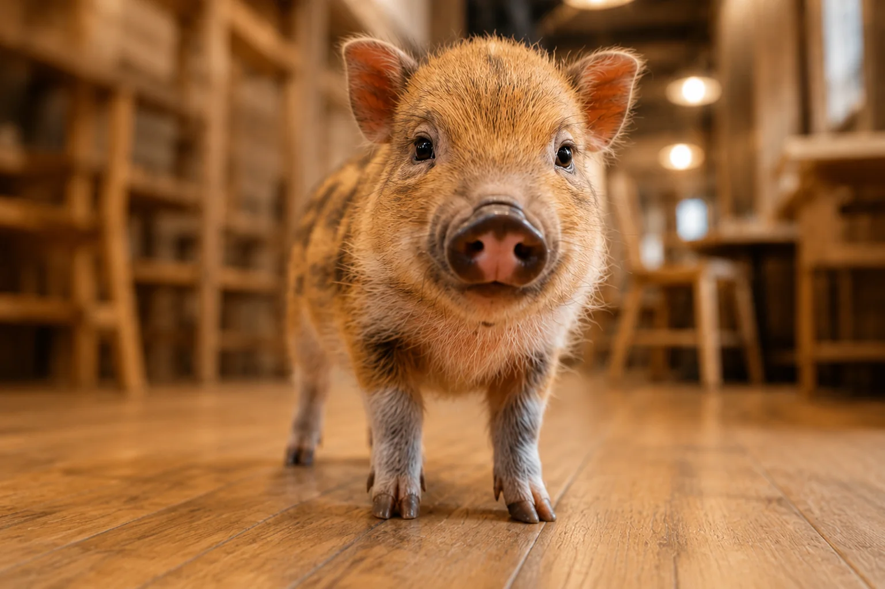

| 月 | 火 | 水 | 木 | 金 | 土 | 日 |
|---|---|---|---|---|---|---|
| 定休日 |
営業時間 9:00–16:00 （L.O.15:30）
Concept
ごろごろ、のんびり、幸せ。
忙しい毎日に、ちょっとひと休み。気ままな2匹の子ぶたが、 お昼寝をしたり、時々お客様のそばに寄り添ったり。
「なんとなくぼんやり過ごす時間も、大切な時間。」 そんな気持ちを思い出せる場所です。
Aboutを詳しく見る


Access
カフェ情報
- 営業時間
- 9:00–16:00（L.O.15:30）
- 定休日
- 水曜日
- 住所
- 〒071-1425 北海道上川郡東川町西町1丁目19（架空の所在地）
- 駐車場
- 店舗前に6台（無料）